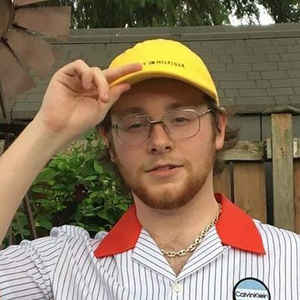

Краткая биография
Канадский певец, родом из Онтарио, который позиционирует себя как исполнителя в индивидуальном стиле под названием "Phonk". Ранние его треки исполнялись под псевдонимом “Ryan C.”. Особую популярность он обрёл в 2019 году.
Ранние годы
Родившись в провинции Онтарио в городе Ошава, Фредди был одним из более чем 40000 детей, которые хотели попасть в большой мир. С детства у мальчика был талант к музыке и он немедля решил его развивать. Первые его клипы были сняты в 2016 году именно в родном городе.
Творчество
С 2017 года певец выпускает свой первый альбом клипов в люди, завоевывая неслыханную популярность среди подростков. Особенностью его творчества является стиль музыки, который был в ходу в начале 90-х годов, а также быстрая профессиональная начитка текста без потери качества. Одними из самых известных треков, которые покорили сердца современников в 2017 году стали композиции «Who is Freddie Dredd?», «Opale», «Evil Fantasy». Это были хиты его первого альбома.
В 2019 году популярность приобрели песни «CHA-CHA», «GTG», «Weather», «Oh Darling». Свои клипы Дредд режиссирует сам, что позволяет ему выделиться среди остальной серости снятых клипов. Кроме того, что он сам снимается и зачитывает тексты песен, он еще и оператором подрабатывает.